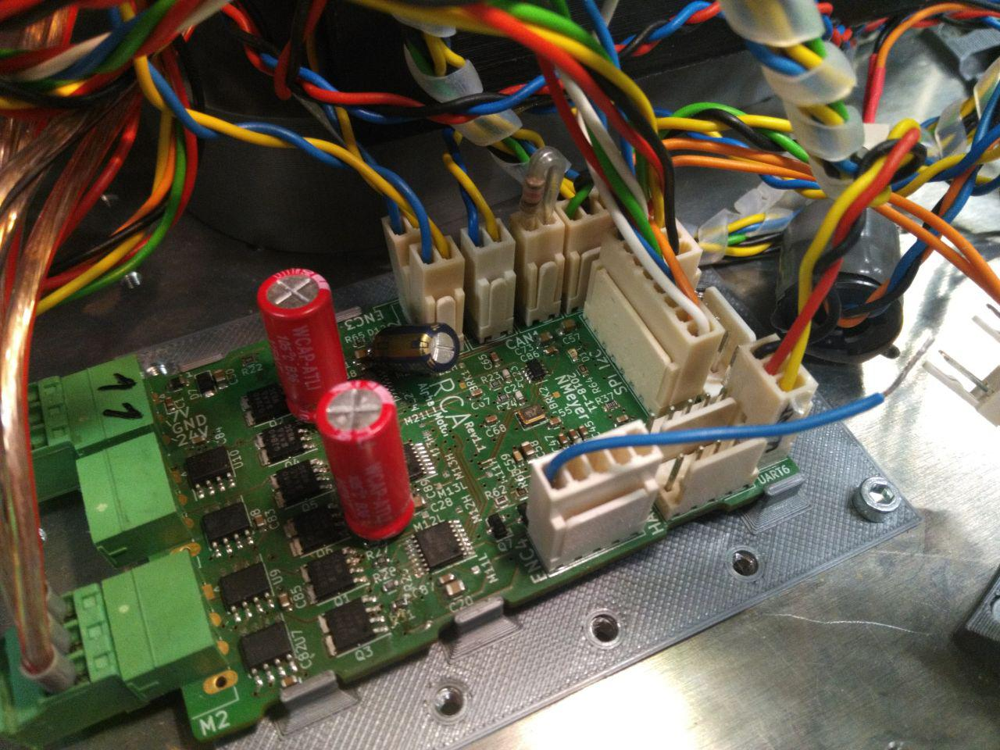
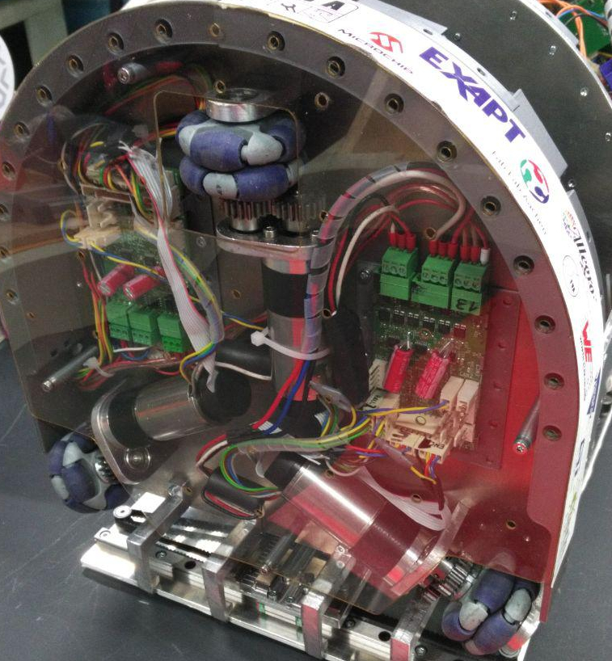

In der Saison 2019 ist unsere Elektronik fast vollständig überarbeitet oder sogar neu entwickelt. Eine der Neuentwicklungen ist unser neues Motorcontrol-Board, genannt Alpha-Motor. Der Name bricht mit dem Schema, das vorher verwendet wurde: Auf den iMotor folgte der 2Motor, wiederum gefolgt vom 3Motor. Der Alpha-Motor kann anders als sein direkter Vorgänger nur zwei DC- oder BLDC-Motoren antreiben. Dafür wurden mehrere Features hinzugefügt, die den Roboter leistungsfähiger und besser kontrollierbar machen. Die wohl wichtigste Änderung betrifft die Ausgangsstufen. Wo vorher vollintegrierte Chips verwendet wurden, sitzen nun simple Motortreiber-ICs (MIC4606), die Leistungstransistoren steuern. Die Leistungsabgabe kann mit diesem simpleren Design verdoppelt werden, da Abwärme besser abgestrahlt wird. Für ein proof-of-concept der neuen Bauelemente wurde ein Testboard entwickelt.

Hier ist bereits zu sehen, dass die Ansteuerung nicht sehr komplex ist, da einfach ein Timer des Mikrocontrollers über drei komplementäre Ausgänge einen Motor steuern kann. Die Verwendung einer SPI-Verbindung oder ähnlichem um mit den Endstufen zu kommunizieren entfällt. Es ist jetzt noch leichter die Kontrolle zu behalten, da eine neue Strommessung für jeden Motor hinzugefügt wurde, die mit 1 MHz Abtastrate den Strom durch die Schaltbrücken begrenzen kann. Der Spannungsabfall über einen Shunt-Widerstand wird in einem Komparator mit der frei verstellbaren Vorgabe verglichen und das Ergebnis auf den asynchronen Break-Input des Mikrocontrollers gegeben. Das Ergebnis ist eine effektive Stromregelung. Zusätzlich wird in jeweils zwei der drei Phasen die Stromstärke mit Hall-Sensoren gemessen, um eine sinusförmige Kommutierung statt einer einfacheren blöckförmigen zu ermöglichen. Die Hauptaufgabe der Schaltung wird jetzt also besser erfüllt, ohne auf Funktionalität verzichten zu müssen.

Neben der Steuerung von Motoren, ist der Alpha-Motor wie sein Vorgänger das Gehirn des Roboters. Über zwei CAN-Busse werden die Befehle vom Master-Board zu den Slaves geschickt und eine serielle Schnittstelle und einen SWD-Port (Serial-Wire-Debug) kommuniziert mit unserem Debugger, über den nicht nur Events geloggt werden können, sondern der Roboter auch over-the-air neue Software erhält. Da weiterhin der gleiche Mikrocontroller verwendet wird, ist grundsätzlich die Verwendung zusammen mit älteren Boards möglich um im Notfall eine Ausweichmöglichkeit zu haben.
